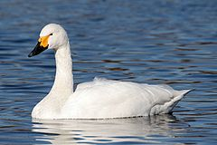

Tundra Swan
(Bewick's Swan/Whistling Swan) |
|  |
Adult Bewick's Swan, Cygnus columbianus bewickii
 Tundra swans (help·info) Tundra swans (help·info)
|
| Conservation status |
|
|
| Binomial name |
Cygnus columbianus
(Ord, 1815) |
| Subspecies |
|
C. c. bewickii (Yarrell, 1830), Bewick's Swan
C. c. columbianus (Ord, 1815), Whistling Swan
|
| Synonyms |
|
Anas columbianus Ord, 1815
Cygnus bewickii (Yarrell, 1838)
Cygnus bewickii jankowski (lapsus)
Cygnus bewickii jankowskii
Cygnus columbianus jancowskii (lapsus)
Cygnus columbianus jankowskii
Olor bewickii (Yarrell, 1838)
Olor columbianus (Ord, 1815)
|
The Tundra Swan (Cygnus columbianus) is a small Holarctic swan. The two taxa within it are usually regarded as conspecific, but are also sometimes[1] split into two species, Cygnus bewickii (Bewick's Swan) of the Palaearctic and the Whistling Swan, C. columbianus proper, of the Nearctic. Birds from eastern Russia (roughly east of the Taimyr Peninsula) are sometimes separated as the subspecies C. c. jankowskii, but this is not widely accepted as distinct, most authors including them in C. c. bewickii. Tundra Swans are sometimes separated in the genus Olor together with the other Arctic swan species.[2]
Bewick's Swan is named after the engraver Thomas Bewick, who specialised in illustrations of birds and animals.

{kind=link}